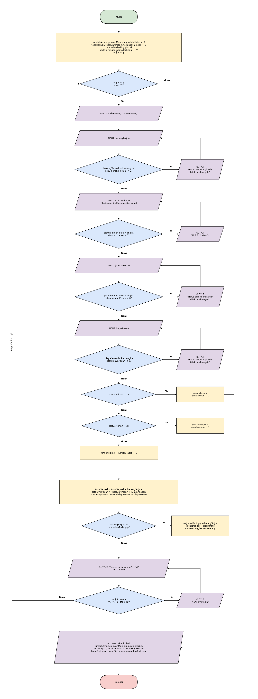
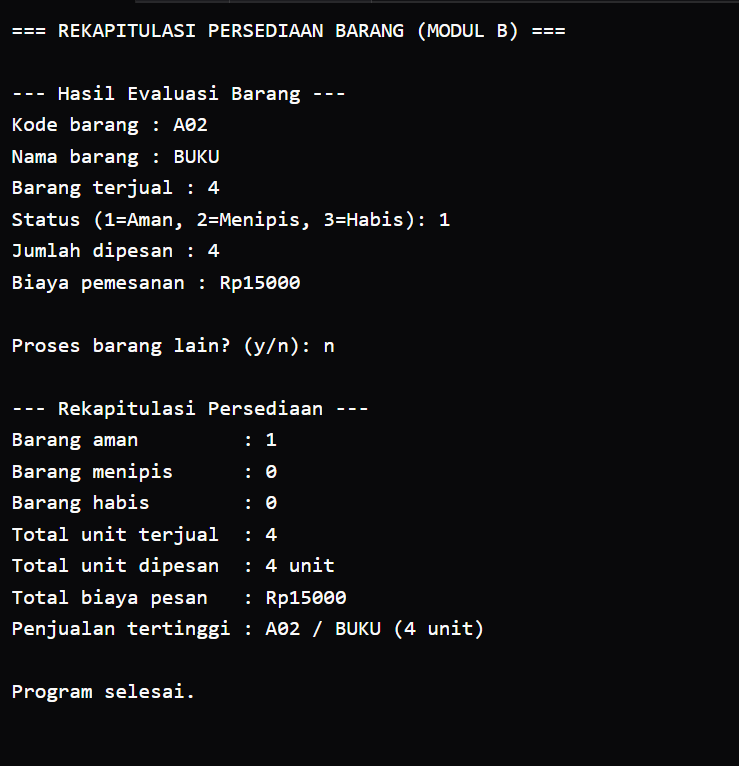
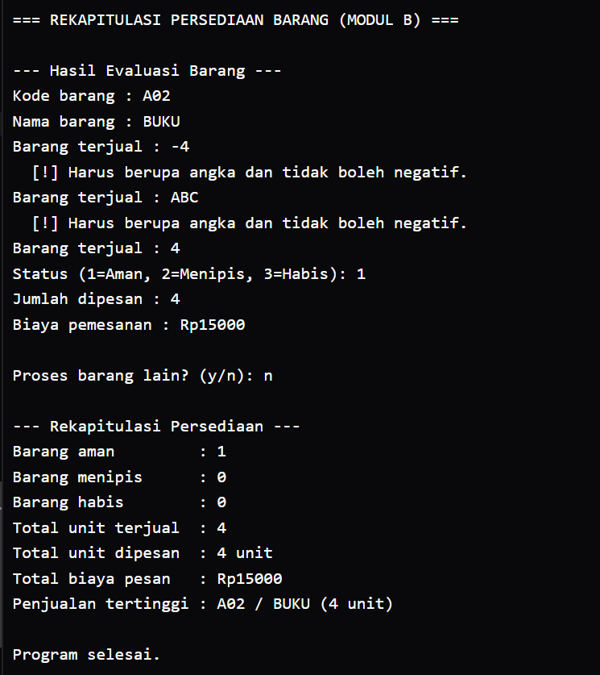

Studi Kasus 06 · Kelompok 6
Modul B
Penanggung jawab: Lucy (NIM 322610008)
Algoritma Deskriptif
- Mulai.
- Siapkan variabel rekap:
jumlahAman,jumlahMenipis,jumlahHabis,totalTerjual,totalUnitPesan, dantotalBiayaPesanbernilai 0;penjualanTertinggibernilai -1;kodeTertinggidannamaTertinggidikosongkan;lanjutbernilai 'y'. - Selama
lanjutbernilai 'y' atau 'Y', ulangi langkah 4 sampai 12. - Baca
kodeBarangdannamaBarang. - Baca
barangTerjual. Jika bukan angka atau negatif, tampilkan pesan kesalahan dan baca ulang sampai valid. - Baca
statusPilihan(1 = Aman, 2 = Menipis, 3 = Habis). Jika di luar rentang 1 sampai 3, tampilkan pesan kesalahan dan baca ulang sampai valid. - Baca
jumlahPesan. Jika bukan angka atau negatif, tampilkan pesan kesalahan dan baca ulang sampai valid. - Baca
biayaPesan. Jika bukan angka atau negatif, tampilkan pesan kesalahan dan baca ulang sampai valid. - Jika
statusPilihan= 1, tambahjumlahAman1; jika = 2, tambahjumlahMenipis1; selain itu tambahjumlahHabis1. - Tambahkan
barangTerjualketotalTerjual,jumlahPesanketotalUnitPesan, danbiayaPesanketotalBiayaPesan. - Jika
barangTerjual>penjualanTertinggi, perbaruipenjualanTertinggi,kodeTertinggi, dannamaTertinggidengan data barang saat ini. - Tanyakan "Proses barang lain? (y/n)" dan baca
lanjut; tolak jawaban selain y, Y, n, N. - Kembali ke langkah 3.
- Setelah perulangan berhenti, tampilkan rekapitulasi: jumlah barang aman, menipis, habis, total unit terjual, total unit dipesan, total biaya pemesanan, dan barang dengan penjualan tertinggi.
- Selesai.
Pseudocode
ALGORITMA ModulB_RekapitulasiPersediaan
DEKLARASI
jumlahAman, jumlahMenipis, jumlahHabis : integer
totalTerjual, totalUnitPesan : integer
totalBiayaPesan : integer
penjualanTertinggi : integer
kodeTertinggi, namaTertinggi : string
kodeBarang, namaBarang : string
barangTerjual, statusPilihan : integer
jumlahPesan, biayaPesan : integer
lanjut : character
MULAI
// Langkah 2: inisialisasi
jumlahAman ← 0
jumlahMenipis ← 0
jumlahHabis ← 0
totalTerjual ← 0
totalUnitPesan ← 0
totalBiayaPesan ← 0
penjualanTertinggi ← -1
kodeTertinggi ← ""
namaTertinggi ← ""
lanjut ← 'y'
// Langkah 3: perulangan utama
SELAMA lanjut = 'y' ATAU lanjut = 'Y' LAKUKAN
// Langkah 4
BACA kodeBarang, namaBarang
// Langkah 5: validasi barangTerjual
BACA barangTerjual
SELAMA barangTerjual bukan angka ATAU barangTerjual < 0 LAKUKAN
TAMPILKAN "Harus berupa angka dan tidak boleh negatif"
BACA barangTerjual
AKHIR SELAMA
// Langkah 6: validasi statusPilihan
BACA statusPilihan
SELAMA statusPilihan bukan angka ATAU statusPilihan < 1 ATAU statusPilihan > 3 LAKUKAN
TAMPILKAN "Pilih 1, 2, atau 3"
BACA statusPilihan
AKHIR SELAMA
// Langkah 7: validasi jumlahPesan
BACA jumlahPesan
SELAMA jumlahPesan bukan angka ATAU jumlahPesan < 0 LAKUKAN
TAMPILKAN "Harus berupa angka dan tidak boleh negatif"
BACA jumlahPesan
AKHIR SELAMA
// Langkah 8: validasi biayaPesan
BACA biayaPesan
SELAMA biayaPesan bukan angka ATAU biayaPesan < 0 LAKUKAN TAMPILKAN "Harus berupa angka dan tidak boleh negatif"
BACA biayaPesan
AKHIR SELAMA
// Langkah 9: hitung jumlah per status
JIKA statusPilihan = 1 MAKA
jumlahAman ← jumlahAman + 1
JIKA TIDAK, JIKA statusPilihan = 2 MAKA
jumlahMenipis ← jumlahMenipis + 1
JIKA TIDAK
jumlahHabis ← jumlahHabis + 1
AKHIR JIKA
// Langkah 10: akumulasi total
totalTerjual ← totalTerjual + barangTerjual
totalUnitPesan ← totalUnitPesan + jumlahPesan
totalBiayaPesan ← totalBiayaPesan + biayaPesan
// Langkah 11: cari penjualan tertinggi
JIKA barangTerjual > penjualanTertinggi MAKA penjualanTertinggi ← barangTerjual
kodeTertinggi ← kodeBarang
namaTertinggi ← namaBarang
AKHIR JIKA
// Langkah 12: tanya lanjut, tolak selain y/Y/n/N
ULANGI
TAMPILKAN "Proses barang lain? (y/n)"
BACA lanjut
JIKA lanjut bukan 'y', 'Y', 'n', atau 'N' MAKA
TAMPILKAN "Jawab y atau n"
AKHIR JIKA
SAMPAI lanjut = 'y' ATAU 'Y' ATAU 'n' ATAU 'N'
// Langkah 13: kembali ke SELAMA di atas
AKHIR SELAMA
// Langkah 14: tampilkan rekapitulasi
TAMPILKAN "=== REKAPITULASI PERSEDIAAN ==="
TAMPILKAN "Barang Aman : ", jumlahAman
TAMPILKAN "Barang Menipis : ", jumlahMenipis
TAMPILKAN "Barang Habis : ", jumlahHabis
TAMPILKAN "Total unit terjual : ", totalTerjual
TAMPILKAN "Total unit dipesan : ", totalUnitPesan
TAMPILKAN "Total biaya pesan : Rp", totalBiayaPesan
TAMPILKAN "Penjualan tertinggi : ", kodeTertinggi, " / ", namaTertinggi,
" (", penjualanTertinggi, " unit)"
SELESAIFlowchart

Klik gambar untuk melihat ukuran penuh.
Source Code dan Penjelasan
- Variabel rekap dideklarasikan dan diisi nilai awal sebelum perulangan.
penjualanTertinggidiisi -1 agar barang pertama, termasuk yang terjual 0, pasti menjadi rekor awal. - Perulangan utama
whileberjalan selamalanjutbernilai 'y' atau 'Y', sehingga banyak barang dapat diproses. - Validasi input memakai
do-while. Jika input bukan angka (misalnya "ABC"),cin.clear()dancin.ignore()membersihkan input yang salah lalu nilainya diberi tanda tidak valid, sehingga program menampilkan pesan kesalahan dan meminta input ulang tanpa berhenti. - Percabangan status memakai
if - else if - elseuntuk menambahjumlahAman,jumlahMenipis, ataujumlahHabis. - Akumulasi memakai operator
+=untuk total terjual, total unit pesan, dan total biaya pesan. - Penjualan tertinggi dicari dengan membandingkan
barangTerjualdengan rekor sementara; jika lebih besar, rekor dan identitas barangnya diperbarui. - Pertanyaan lanjut memakai
do-whileyang menolak jawaban selain y, Y, n, dan N. - Rekapitulasi ditampilkan setelah perulangan utama berhenti.
#include <iostream>
#include <string>
using namespace std;
int main() {
// Deklarasi variabel input per barang
string kodeBarang, namaBarang;
int barangTerjual = 0, statusPilihan = 0;
int jumlahPesan = 0, biayaPesan = 0;
char lanjut = 'y';
// Deklarasi variabel rekapitulasi (nilai awal sebelum perulangan)
int jumlahAman = 0, jumlahMenipis = 0, jumlahHabis = 0;
int totalTerjual = 0, totalUnitPesan = 0, totalBiayaPesan = 0;
int penjualanTertinggi = -1; // -1 agar barang pertama selalu menjadi rekor awal
string kodeTertinggi = "", namaTertinggi = "";
cout << "=== REKAPITULASI PERSEDIAAN BARANG (MODUL B) ===" << endl;
// Perulangan utama: proses barang selama petugas memilih lanjut
while (lanjut == 'y' || lanjut == 'Y') {
cout << "\n--- Hasil Evaluasi Barang ---" << endl;
cout << "Kode barang : ";
getline(cin >> ws, kodeBarang);
cout << "Nama barang : ";
getline(cin >> ws, namaBarang);
// Validasi barang terjual (tidak boleh negatif atau bukan angka)
do {
cout << "Barang terjual : ";
if (!(cin >> barangTerjual)) {
cin.clear();
cin.ignore(10000, '\n');
barangTerjual = -1;
}
if (barangTerjual < 0)
cout << " [!] Harus berupa angka dan tidak boleh negatif." << endl;
} while (barangTerjual < 0);
// Validasi status barang (hanya 1, 2, atau 3)
do {
cout << "Status (1=Aman, 2=Menipis, 3=Habis): ";
if (!(cin >> statusPilihan)) {
cin.clear();
cin.ignore(10000, '\n');
statusPilihan = 0;
}
if (statusPilihan < 1 || statusPilihan > 3)
cout << " [!] Pilih 1, 2, atau 3." << endl;
} while (statusPilihan < 1 || statusPilihan > 3);
// Validasi jumlah pesan
do {
cout << "Jumlah dipesan : ";
if (!(cin >> jumlahPesan)) {
cin.clear();
cin.ignore(10000, '\n');
jumlahPesan = -1;
}
if (jumlahPesan < 0)
cout << " [!] Harus berupa angka dan tidak boleh negatif." << endl;
} while (jumlahPesan < 0);
// Validasi biaya pemesanan
do {
cout << "Biaya pemesanan : Rp";
if (!(cin >> biayaPesan)) {
cin.clear();
cin.ignore(10000, '\n');
biayaPesan = -1;
}
if (biayaPesan < 0)
cout << " [!] Harus berupa angka dan tidak boleh negatif." << endl;
} while (biayaPesan < 0);
// Hitung jumlah barang per status
if (statusPilihan == 1) {
jumlahAman++;
} else if (statusPilihan == 2) {
jumlahMenipis++;
} else {
jumlahHabis++;
}
// Akumulasi total
totalTerjual += barangTerjual;
totalUnitPesan += jumlahPesan;
totalBiayaPesan += biayaPesan;
// Cari barang dengan penjualan tertinggi
if (barangTerjual > penjualanTertinggi) {
penjualanTertinggi = barangTerjual;
kodeTertinggi = kodeBarang;
namaTertinggi = namaBarang;
}
// Tanya lanjut, tolak jawaban selain y/n
do {
cout << "\nProses barang lain? (y/n): ";
cin >> lanjut;
cin.ignore(10000, '\n');
if (lanjut != 'y' && lanjut != 'Y' && lanjut != 'n' && lanjut != 'N')
cout << " [!] Jawab y atau n." << endl;
} while (lanjut != 'y' && lanjut != 'Y' && lanjut != 'n' && lanjut != 'N');
}
// Tampilkan rekapitulasi
cout << "\n--- Rekapitulasi Persediaan ---" << endl;
cout << "Barang aman : " << jumlahAman << endl;
cout << "Barang menipis : " << jumlahMenipis << endl;
cout << "Barang habis : " << jumlahHabis << endl;
cout << "Total unit terjual : " << totalTerjual << endl;
cout << "Total unit dipesan : " << totalUnitPesan << " unit" << endl;
cout << "Total biaya pesan : Rp" << totalBiayaPesan << endl;
cout << "Penjualan tertinggi : " << kodeTertinggi << " / " << namaTertinggi
<< " (" << penjualanTertinggi << " unit)" << endl;
cout << "\nProgram selesai." << endl;
return 0;
}Hasil Eksekusi dan Pengujian
Hasil Eksekusi


Tabel Pengujian
| No. | Skenario | Data masukan | Hasil yang diharapkan | Hasil aktual | Status |
|---|---|---|---|---|---|
| 1 | Input normal, satu barang (batas bawah jumlah data) | A02 BUKU: terjual 4, status 1, pesan 4, Rp15000, lanjut n | Aman 1, Menipis 0, Habis 0, terjual 4, dipesan 4 unit, Rp15000, tertinggi A02 / BUKU (4 unit) | Aman 1, Menipis 0, Habis 0, terjual 4, dipesan 4 unit, Rp15000, tertinggi A02 / BUKU (4 unit) | Berhasil |
| 2 | Input negatif dan bukan angka | Barang terjual -4, lalu ABC, lalu 4; data lain sama dengan skenario 1 | -4 dan ABC ditolak dengan pesan kesalahan, program tidak berhenti, input 4 diterima | Muncul pesan harus berupa angka dan tidak boleh negatif dua kali, lalu input 4 diterima dan rekap sama dengan skenario 1 | Berhasil |
| 3 | Tiga barang dengan status berbeda | a01 pulpen: terjual 12, status 2, pesan 7, Rp14000. A02 BUKU: terjual 15, status 3, pesan 10, Rp30000. A03 pena: terjual 8, status 1, pesan 0, Rp0 | Aman 1, Menipis 1, Habis 1, terjual 35, dipesan 17 unit, Rp44000, tertinggi A02 / BUKU (15 unit) | Aman 1, Menipis 1, Habis 1, terjual 35, dipesan 17 unit, Rp44000, tertinggi A02 / BUKU (15 unit) | Berhasil |
| 4 | Nilai nol | X01 pensil: terjual 0, status 1, pesan 0, Rp0 | Aman 1, semua total 0, tertinggi X01 / pensil (0 unit) | Aman 1, semua total 0, tertinggi X01 / pensil (0 unit) | Berhasil |
| 5 | Batas rentang status (1 dan 3) | B01 penghapus: terjual 5, status 1, pesan 0, Rp0. B02 spidol: terjual 9, status 3, pesan 10, Rp50000 | Aman 1, Habis 1, terjual 14, dipesan 10 unit, Rp50000, tertinggi B02 / spidol (9 unit) | Aman 1, Habis 1, terjual 14, dipesan 10 unit, Rp50000, tertinggi B02 / spidol (9 unit) | Berhasil |
| 6 | Status di luar rentang 1-3 | Status 0, lalu 4, lalu 2 | Status 0 dan 4 ditolak, status 2 diterima | Muncul pesan pilih 1, 2, atau 3 dua kali, lalu status 2 diterima, Menipis 1 | Berhasil |
| 7 | Jumlah dipesan negatif dan biaya bukan angka | Jumlah dipesan -1, lalu 5; biaya pemesanan abc, lalu 10000 | -1 dan abc ditolak, program tidak berhenti, 5 dan 10000 diterima | Muncul pesan harus berupa angka dan tidak boleh negatif di kedua input, lalu dipesan 5 unit dan Rp10000 diterima | Berhasil |
| 8 | Jawaban lanjut tidak valid | Proses barang lain: x, lalu n | x ditolak dan ditanya ulang, n mengakhiri program | Muncul pesan jawab y atau n, setelah n rekapitulasi ditampilkan | Berhasil |
| 9 | Dua barang dengan penjualan sama | F01 balpoin: terjual 10, status 1, pesan 0, Rp0. F02 buku: terjual 10, status 2, pesan 3, Rp6000 | Barang pertama tetap tertinggi (F01 / balpoin, 10 unit) | Tertinggi F01 / balpoin (10 unit), Aman 1, Menipis 1, dipesan 3 unit, Rp6000 | Berhasil |